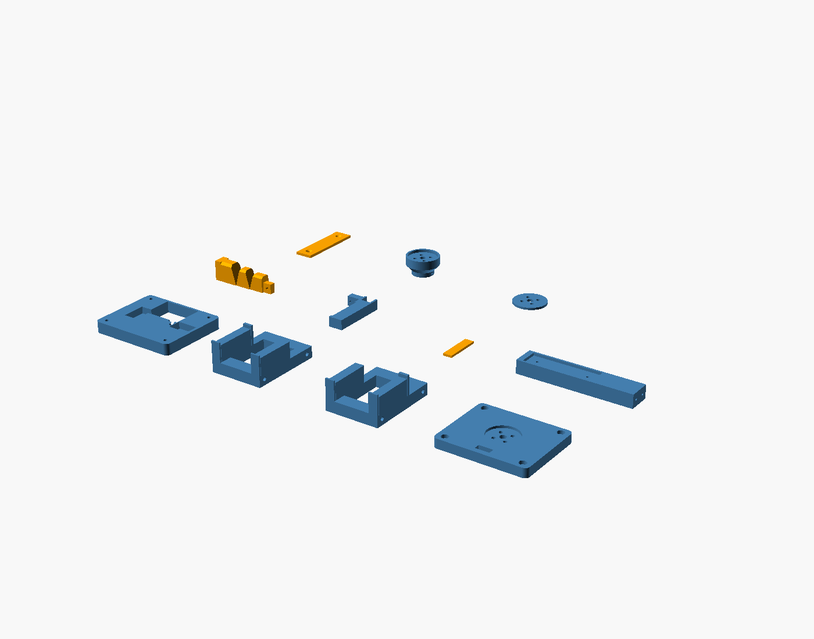

A print-oriented variation of gripper-finger-post (Claude's design, in our effector library):
one rigid post, one root-compliant TPU finger, and an STS3215 cable drive.
The enclosure becomes an open, bolted frame made from flat-printing parts.
Prototype CAD; not yet printed or bench-tested.
Write-up against the parent design: Two agents, one finger.

What changed
| Original | Astra |
|---|---|
| Solid housing with a 26 mm bridge above the servo | Separate deck, two windowed rails, and wrist plate; no servo-bay ceiling to bridge |
| Housing + wrist plate: 253.6 cm³ of CAD solid | About 126 cm³: approximately 50% less modeled material |
| 84 × 68 × 58 mm housing/mount envelope | 78 × 64 × 65 mm; narrower, but 7 mm taller to fit the separate deck |
| Enclosed cable passage terminating inside the solid flexure foot | Accessible diagonal guide exiting beside the foot; nominal lead-in clears the spool taper |
| One-piece spool with a projecting flange | Tapered core plus a separately printed flat flange, clamped by the horn screws |
| Closed lever pocket and thin pad-recess lips | Open tenon saddle and side-open pad seat; one through-bolt and nut |
| Flexure tenon suspended above its print face | Tenon shares the flat back; lever shifts outward 2.79 mm |
| Thin residual lips at tapered hinge notches | Notches cut through the full preceding unit |
| Post exported standing | Post exported on its back, with face recess upward |
| Plate holes described as countersunk, but cylindrical | Actual countersinks in a 2.4 mm face plate |
The material comparison uses solid CAD volumes, not slicer filament estimates. This trades three extra printed pieces (11 total instead of 8) and long frame bolts for less bulk, smaller print heights, and access to the servo and cable. Finger reach remains 95 mm; the open pad gap is 39.5 mm. The 10–30 mm object range is checked geometrically. The servo and wrist horn patterns are inherited nominal dimensions, not new measurements of hardware.
Build and inspect
Use Python with build123d, numpy, trimesh, and rtree installed. This design
was built using build123d 0.8.0. OpenSCAD and xvfb-run are needed only for PNGs.
make -C effectors/gripper-finger-post-astra all
make -C effectors/gripper-finger-post-astra render
all writes eleven print-oriented STLs, parts.json, open/grasp assembly
STLs, an open assembly STEP, colored OpenSCAD scenes, and verification.json
to exports/. Each individual part sits on Z=0. Assembly STLs include mating
surfaces and are for inspection, not printing. The grasp scene includes the
example ball; the dark servo block in the colored scenes is a reference envelope.
The print-layout scene is an overview, not a packing for a particular printer bed.

Start with a 0.4 mm nozzle, 0.2 mm layers, and four perimeters on rigid parts. PETG is the default rigid material; PLA is suitable for initial fit prototypes. Use TPU 95A for the root and finger pad. Print the root solid, and inspect both 0.8 mm hinge webs in the slicer before printing.
| STL | Exported print orientation | Detail to inspect in the slicer |
|---|---|---|
deck |
Flat underside down, sockets up | Short 3.4 mm diagonal liner bore; countersinks at the bed |
rail_left, rail_right |
Outer face down, cradle pads up | Long M3 bores have 45° roofs; clear them with a drill if needed |
arm_mount |
Horn recess up | Bottom-facing wrist screw seats have 45° countersinks |
root_flexure |
Flat back and tenon down, notches up | Two intentional 0.8 mm hinge webs; small transverse bores |
lever |
Closed side down, open saddle up | 1.85 mm minimum saddle walls; 1.8 mm horn bore |
post |
Back down, friction-plate recess up | Small horizontal foot pilots |
pad, face_plate |
Flat, countersinks up where present | Pad glues into lever; plate stays replaceable |
capstan_core |
Drum end down, horn recess up | 45° expanding taper; small transverse cable anchor |
capstan_flange |
Flat | No bridge over a spool groove |
Designed to avoid large supports. Small bores still need short bridging, and 45° surfaces depend on cooling and layer settings. Review the slice rather than adding support inside the cable guide or TPU notches. No slicer or physical print has yet verified these settings.
Hardware and assembly
In addition to the STS3215 and its matching metal horn:
- 4 × M3 × 65 mm frame bolts with heads fitting the Ø6 × 3 mm underside recesses, plus M3 nuts on the deck. Nut bearing surfaces are flat; washers are optional.
- 4 × M3 horn screws through the capstan stack. The printed stack above the horn seat is 16.5 mm; choose length for the actual horn's thread depth (start by checking M3 × 20 mm).
- 4 × M3 countersunk screws for the wrist horn; determine length from that horn's thread depth. The plate is 8 mm thick with a 2 mm horn recess.
- 4 × M2.5 × 8 mm countersunk screws for the two feet and 2 × M2.5 × 8 mm countersunk screws for the friction plate. These use 2.1 mm printed pilots; test screw fit in the selected material before committing to the assembly.
- 1 × M2.5 × 12 mm lever bolt, nut, and a small washer against the TPU tenon.
-
Approximately 0.8 mm low-stretch tendon; short 3 mm OD / 2 mm ID PTFE liner in the 3.4 mm deck guide; adhesive for the pad and liner; thin servo-fit shims.
-
Fit the post and flexure feet to the deck, installing their screws from below. Heads must sit flush so the right rail can seat against the deck.
- Glue the pad to the lever. Seat the tenon in the open saddle and install its through-bolt, washer, and nut without crushing the TPU. Fit the friction plate.
- Attach the wrist plate to the arm horn before closing the frame; access to these screw heads is through the inside of the frame.
- Assemble the capstan core and flange on the servo horn. Thread and knot the tendon using the transverse anchor and centre access bore before installation. Keep the knot clear of the horn and screw paths.
- Place the servo between the rail cradle pads, then add deck and wrist plate. Insert the four long bolts from the wrist side and tighten the nuts on the deck evenly. Nominal servo clearances are 0.5 mm at each side/end in X/Y, 1 mm above, and 0.8 mm below; shim to remove movement without distorting the case. The model does not include actual servo ears or connector protrusions: test-fit those before final assembly. The open front/rear provide cable access.
- Line the accessible deck guide with PTFE, smooth its mouth, and feed the tendon up to the lever horn. Knot above the horn and set light pretension. Turn the spool by hand through its intended take-up before energizing it; confirm the winding stays in the groove and the liner does not move.
Validation and limits
make verify rebuilds and checks all eleven printable meshes for one watertight
solid and flat bed contact, the four frame-bolt paths, pairwise rigid-part
interference in the open pose and five object grasps, and five intermediate
closing poses. It also checks actual contact with the finite pad and face plate,
the cable span against the flexure and rigid parts, and the cable guide/approach
against the servo, frame, and spool. Adjacent rigid flexure bands are excluded
from pairwise collision checks because their shared webs represent deforming TPU.
Only the cable's final approach millimetre at the drum and 0.5 mm at the horn
are excluded from the corresponding contact check.
These are nominal CAD checks, not deformation, strength, fatigue, or winding simulations. The new cable exit, shifted lever, and revised notches change the mechanics. The original MuJoCo current/grip/slip results have not been carried over as results for Astra. Measure hinge stiffness, servo fit, cable tracking, and grip response on this build before using it for that experiment.
Source is self-contained in this folder; generated exports remain gitignored.
params.py is the dimensional source of truth. build.py handles print poses;
verify.py and kinematics.py handle checks; view.py makes previews.
The root-flexure concept derives from the sibling design's SpiRobs implementation
(Wang, Freris & Wei, Device, 2025).